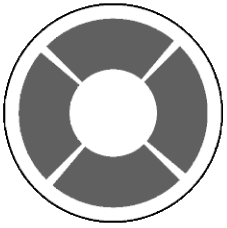
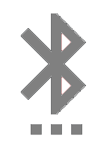

The "Simple BLE joystick" is designed to remotely control of a makeshift robot. A Bluetooth LE module is used as a receiver on the CC2541 chip - e.g. AT-09, MLT-BT05, HM-10, etc.The program is not designed to work with legacy Bluetooth.
Possible scheme for connecting the module to the Arduino

Controls
The software sends ASCII characters over the radio channel, which are interpreted as commands by the controlled device. A '0' is sent when the button is released.
 Joystick 1.
Mimics a conventional eight-way joystick:
Joystick 1.
Mimics a conventional eight-way joystick:
Default settings:
- a Forward
- b Right
- c Backward
- d Left
- k Forward to right
- l Back to right
- m Back to left
- n Forward to left
 Joystick 2. Just four buttons.
Default settings:
- A Forward
- B Right
- C Backward
- D Left
 Nine extra buttons - just in case.
Nine extra buttons - just in case.
The default values are "1" to "9".
All values can be overridden in the settings screen.  Here you can also change the service UUID and characteristics of the device to be controlled, and swap joystick 1 and 2.
It is best not to change the UUID unnecessarily.
Here you can also change the service UUID and characteristics of the device to be controlled, and swap joystick 1 and 2.
It is best not to change the UUID unnecessarily.
 -save settings
-save settings
 -reset.
-reset.
Connecting
The search for available devices starts automatically when you go to the scanner screen , the current connection is reset. By clicking on the device found, you can try to connect to it. If unsuccessful failed to connect or scan, try again. The scan lasts for 5 seconds and can be aborted.
If the service UUID or device specification differs from that specified in the settings, the connection may occur, but it will reset when you go to the control screen.